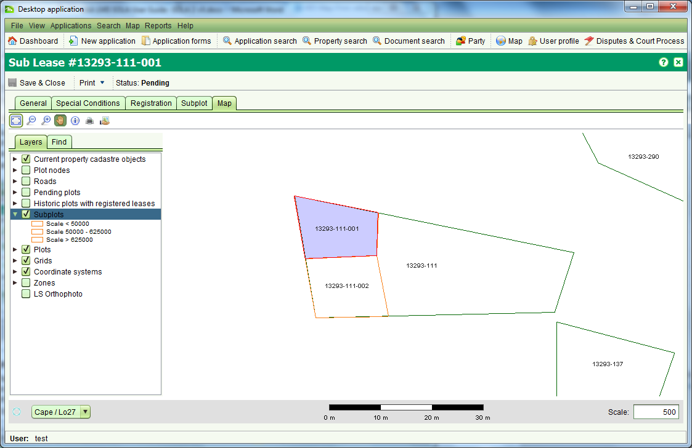

The Sublease Details screen is an extension of the Lease Details screen and
includes additional tabs for recording the subplot of the sublease and a map
tab to show the location of the subplot. It can be accessed from the Rights
and Restrictions tab on the Property Details screen by selecting a Sublease
right (current, historic or pending) and clicking the
 toolbar button.
toolbar button.

To create, change or cancel a sublease you must first lodge an application with the appropriate service (i.e. New Sublease, Vary Sublease or Cancel Sublease).
The additional details that can be captured for a sublease include:
Also See